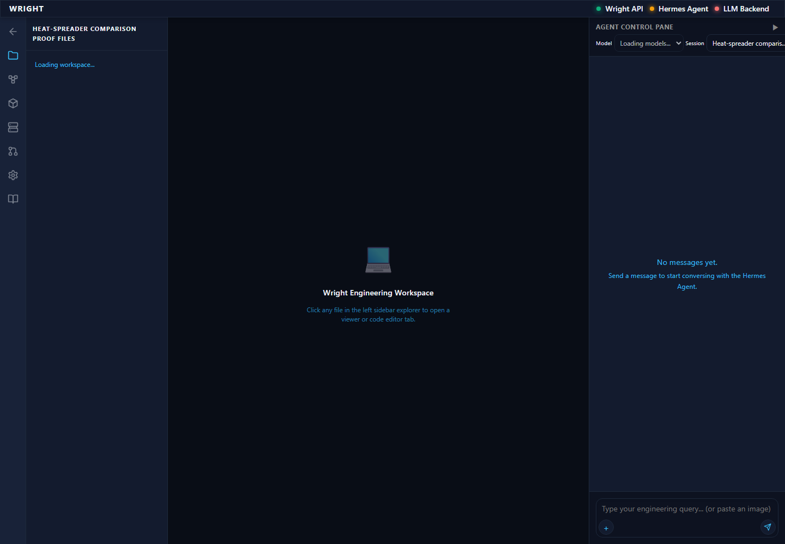
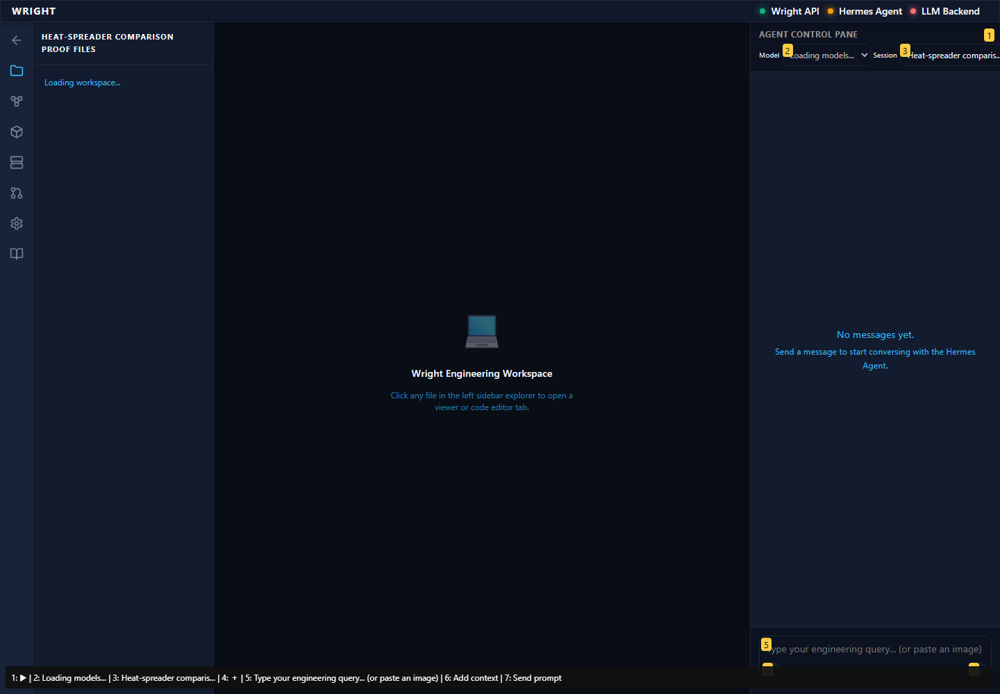
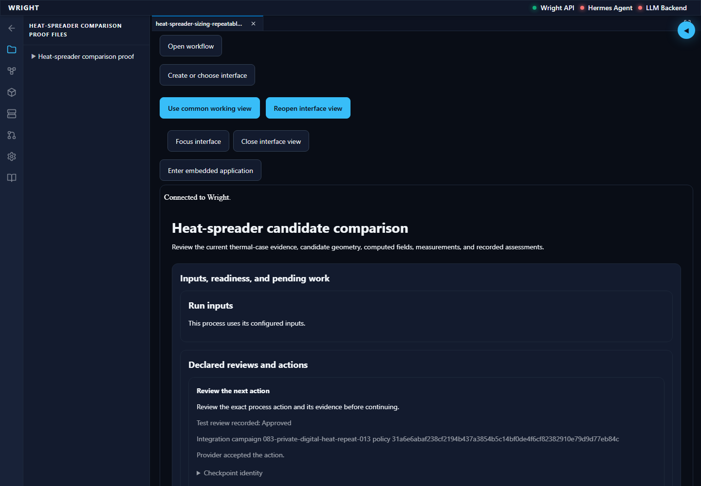
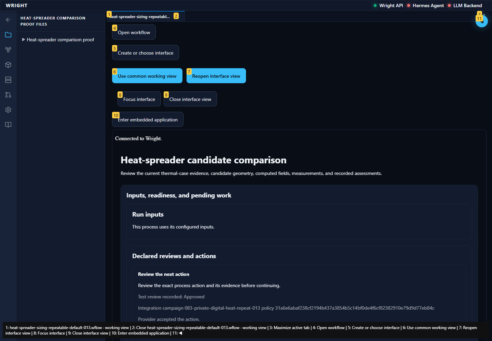
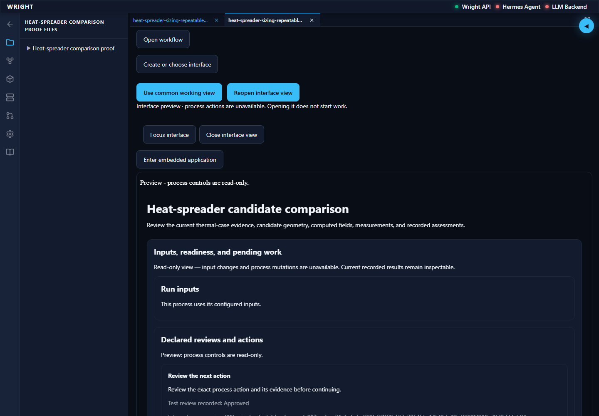
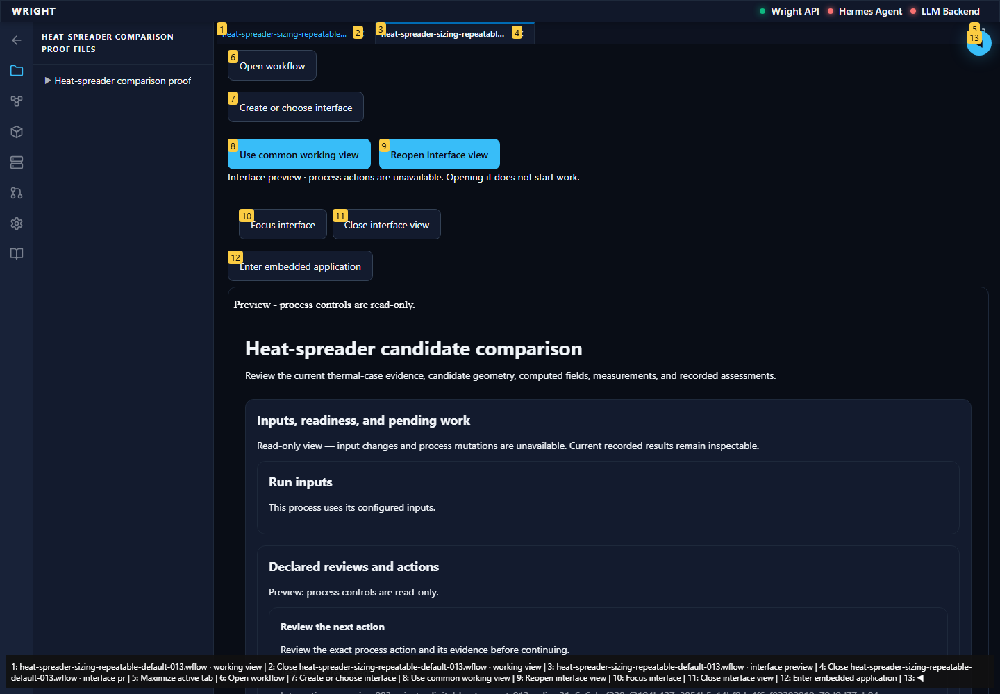

Normal Wright workspace and actual isolated engineering run. No mocked routes or physical action.
Status: pass
The normal workspace opens on the same current installed package.
Expected: Normal workspace available.
Actual: Workflows is visible on the current installed host.
raw 
annotated 
The same saved interface renders the recorded engineering run before opening its preview.
Expected: Working context and eighteen exact results.
Actual: The original run is visible with unchanged result identities.
raw 
annotated 
The saved job preview renders the same exact engineering outputs without compiler/model availability.
Expected: Read-only preview and exact same eighteen result identities.
Actual: Preview banner, backend read-only context and exact engineering result parity verified in 8430 ms (5866 ms before issuance). Earlier stopping reports remain retained; this separates issuance from frame loading.
The explicit recovery control opens a fresh read-only presentation of the same recorded run and saved revision.
Expected: New presentation identity, unchanged process/run/UI revision and exact eighteen results.
Actual: A new read-only presentation renders the same exact results; execution and authoring guards remain empty.
raw 
annotated 